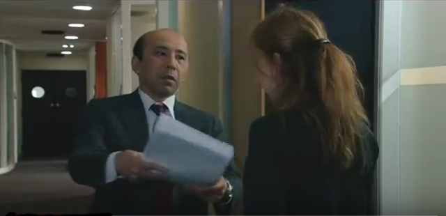

Scènes marquantes du film
1) 24:00

Scène du film, à 00:24:00
Après avoir été recadrée par l’un de ses supérieurs, M.Saito, Amélie se voit confier une tâche par ce dernier qui est d’imprimer un paquet de feuilles, qui se trouve être en réalité le règlement du club de golf dans lequel M.Saito joue. Amélie utilise l'avaleuse afin de faire les photocopies mais son supérieur les trouvent décentrées. Elle recommence donc mais ce dernier tient toujours le même discours. Il finit par lui dire que l’avaleuse n’est pas précise, Amélie doit donc utiliser le scanner ce qui lui prend un temps très long car il y a plus de cent photocopies. Après avoir tout fait au scanner, elle présente son travail à son supérieur mais ce dernier ne prend même pas le temps de le regarder et jette le tas de photocopies à la poubelle. Lors de cette scène nous pouvons voir la torture subit par Amélie et la joie que prend son supérieur à le faire. En effet, par la suite elle continuait d’utiliser l’avaleuse et son supérieur lui disait que c’était mieux alors qu’elle n’avait pas utiliser le scanner. Ce que subit Amélie est le prix à payer lorsque l’on commence au bas de l’échelle dans une compagnie japonaise, obéir et se soumettre à ses supérieurs même si les ordres peuvent être stupides et inutiles.
2) 33:30

Scène du film, à 00:33:30
Amélie venait de rendre un dossier pour un autre département de la compagnie Yumimoto mais ce travail n’était pas le sien même si la personne qui en était chargé était en vacances. Pour ce fait, elle fut convoquée avec M.Tenshi, celui qui lui avait confié le travail, dans le bureau de M.Omochi, leur supérieur. Ce dernier les qualifiait de serpent pour faire allusion à leur trahison. En effet, voler ou faire le travail de quelqu’un autre est une faute grave au Japon. Ce fut la première vrai convocation dans un bureau de l’un de ses supérieurs pour Amélie. Cette dernière ne savait pas qu’il fallait se laisser humilier et ne rien dire car pour une occidentale, on a le droit de se défendre. Or au Japon cet acte est très mal vu. Amélie essaye donc de se défendre et aggrave son cas ainsi que celui de M.Tenshi. Amélie détruit donc un espoir de se voir évoluer au sein de la compagnie pendant plusieurs années. Lors de cette scène nous pouvons voir la soumission totale de M.Tenshi face à M.Omochi car il baisse constamment la tête sans oser de défier son regard. Nous pouvons aussi voir un regard de la part de M.Tenshi, désespéré face au comportement d’Amélie qui n’aurait jamais dû essayer de se défendre.
3) 1:01:00

Scène du film, à 1:01:00
Lors de sa troisième nuit blanche elle se croit libre et se prend pour Dieu. Elle se déshabille entièrement et déambule en sautant de bureau en bureau jusqu’à arriver sur le chaise de sa supérieure Fubuki. A ce moment, elle parle de sa supérieure en disant qu’elle commande mais qu’ Amélie règne car elle se prend pour Dieu. Ensuite, elle se dit Christ aux ordinateurs et enlace celui de sa supérieure. Ensuite, elle redevient un peu plus rationnelle en se comparant toujours au Christ et en disant “ce qui est bien quand on est crucifié, c’est que l’on sait que c’est la fin” pour avoir faillit en s’exhibant de nuit dans la compagnie Yumimoto. Lors de cette scène, elle qualifie ses supérieurs comme des bourreaux et dit que sa supérieure lui tranchera la tête avec un sabre en faisant allusion au samouraï japonais. Puis, elle finit par s’endormir sous les ordures car elle avait froid. On peut donc dire que lors de cette nuit Amélie n’a pas supporté la pression tortionnaire de ses supérieurs et à finit par céder à la folie. Elle est même prête à se faire renvoyer pour échapper à la domination de cette compagnie mais à son plus grand regret elle ne subit que la honte de sa supérieure et de ses collègues au matin mais ne se fait pas renvoyer.
4) 1:21:00

Scène du film, à 1:21:00
Lors de l’une de ses défenestrations, Amélie revient à la réalité par le cri de l’un de ses supérieur, M. Omochi. Depuis, elle avait été dégradé à nettoyer les toilettes. Ce dernier, M.Omochi l’empoigne et la traine par le bras en l'emmenant aux toilettes tout en lui hurlant qu’il n’y avait plus de papier dans une cabine. Amélie terrorisée, se soumis en baissant la tête et couru chercher du papier toilette. Ensuite, M.Omochi saisit Amélie et la jette des toilettes et s’enferme dans la cabine. Lors de cette scène, nous pouvons dire que le personnage principal subit une nouvelle humiliation. Nous pouvons aussi dire que le comportement de son supérieur est infondé par rapport au fait qu’il lui reproche. En effet, oublié de changer un rouleau de papier toilette mérite-il autant de mépris ? Son supérieur aurait pu simplement lui demander gentillement et lui dire de veiller à ce que ça ne se reproduise plus.